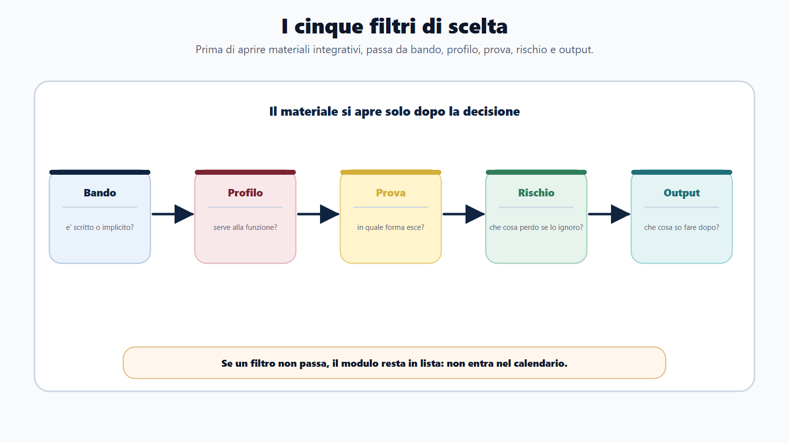
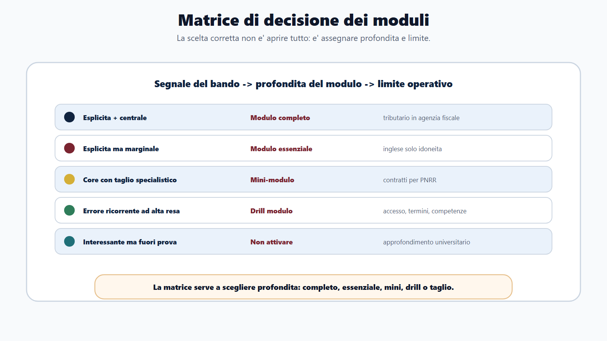
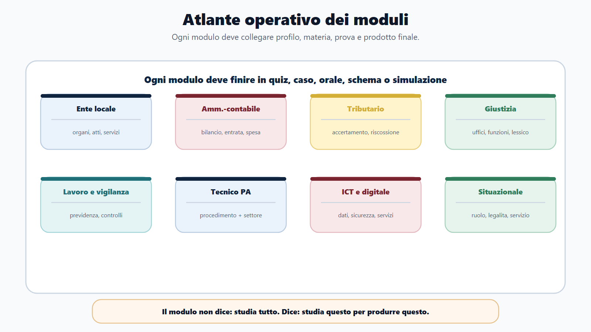
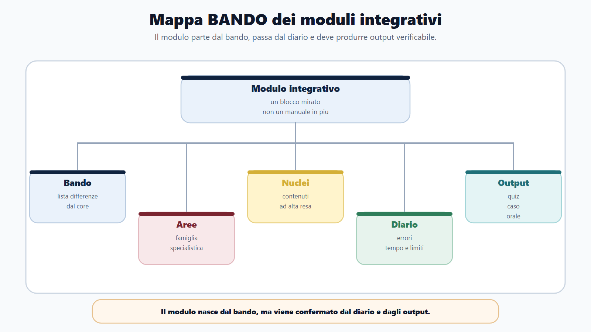
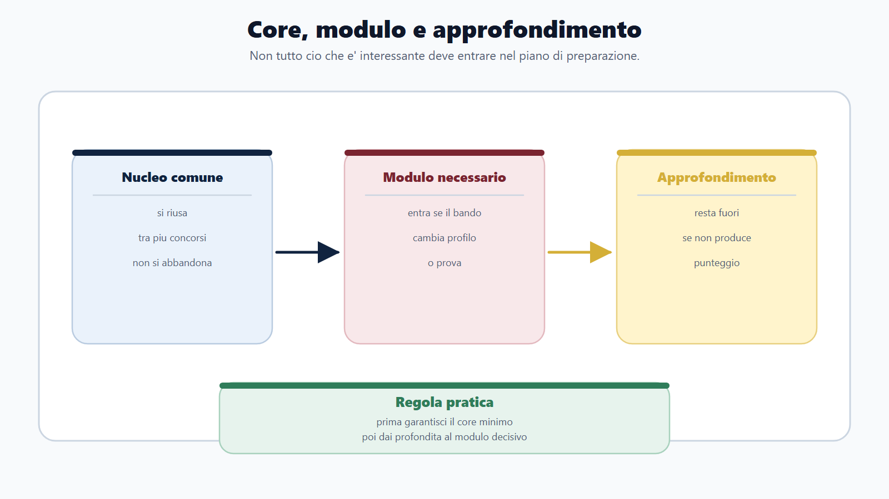
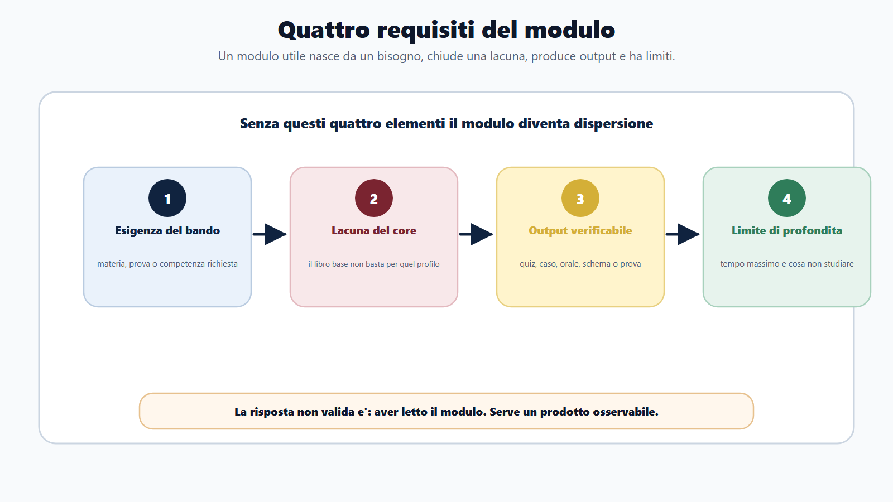

VOL-01 · Capitolo 21
Parte IV · Adattare il metodo
Come scegliere i
moduli integrativi
Per questo concorso, che cosa aggiungo al libro base e che cosa posso lasciare fuori? Non un libro per ogni concorso: un sistema riutilizzabile. Il modulo è il delta specialistico, non un accumulo di materiali.
Schema
Cinque filtri di scelta

Schema
Matrice decisione moduli

Schema
Atlante moduli integrativi

Schema
Mappa bando moduli integrativi

Schema
Core modulo approfondimento

Schema
Quattro requisiti del modulo

01 · Il problema
Il mercato spinge un manuale per ogni bando
Anche quando l’ottanta per cento delle materie è già la stessa. Chi prepara Comuni diversi non ha bisogno di un testo per Napoli, uno per Melfi e uno per Bologna: serve il libro base più il volume sugli enti locali. Chi punta a enti della stessa famiglia previdenziale non ricomincia a ogni avviso. Chi fa concorsi ministeriali riusa la stessa specializzazione.
Che cos’è un modulo
Un blocco verticale con quattro caratteristiche: nasce da un’esigenza ricorrente della famiglia, confermata dai bandi; copre solo il delta non sviluppato nel libro base; ha un output verificabile; ha un limite di profondità. Senza questi quattro elementi è dispersione o un secondo manuale generico.
Che cosa non è
Non ripete amministrativo generale, pubblico impiego generale o logica di base. Dice che cosa conta per quella famiglia, quali norme specialistiche, come cambia la prova, quali errori fanno i candidati di quel settore.
Più materiale = più preparazione. Attivare un modulo per ogni bando, o saltare il nucleo comune perché il modulo è specialistico. Entrambe le strade disperdono capitale.
02 · Tre livelli
Il libro insegna, l’allenamento applica, il modulo specializza
Confondere i tre livelli è uno degli errori più costosi. Se salti il libro base e compri solo moduli, perdi metodo e materie trasversali. Se studi solo il libro base su un concorso verticale, arrivi con lacune decisive.
| Livello | Funzione | Quando lo usi |
|---|---|---|
| Libro base (questo volume) | Metodo, materie comuni essenziali, prove e strumenti. | Sempre: è il nucleo permanente. Lo studi una volta e lo mantieni. |
| Allenamento operativo | Quiz, casi, simulazioni, diario, schede, ripasso. | Per applicare più velocemente ciò che il libro insegna. Non sostituisce né il core né il modulo. |
| Volume specialistico | Delta di settore: norme, lessico, prove tipiche, errori della famiglia. | Quando cambia famiglia di enti o profilo, non quando cambia Comune o sede. |
Un libro base serio deve essere autonomo, ma non enciclopedico. Se coprisse in profondità ogni profilo, diventerebbe ingestibile: tributario avanzato, codice della strada dettagliato, sanità specialistica, magistratura, fondi europei avanzati. Ogni materia deve stare nel posto giusto.
02b · Destinazione
Ogni materia nel posto giusto
Il modulo integra il core. Non lo sostituisce. Se studi solo il modulo, perdi la base comune. Se studi solo il core su un profilo verticale, sottovaluti il settore. La preparazione utile nasce dal bilanciamento.
| Destinazione | Criterio |
|---|---|
| Libro base | Materia trasversale, ricorrente in molte famiglie: metodo, amministrativo essenziale, impiego, prove. |
| Volume specialistico | Materia tipica di una famiglia di enti o profili: TUEL, tributario, ordinamento sanitario, codice della strada. |
| Appendice del volume | Lacuna di sottoprofili interni alla stessa famiglia, senza aprire un secondo prodotto. |
| Altro volume | Specializzazione che appartiene chiaramente a un’altra famiglia, con peso reale in prova. |
| Fuori perimetro | Interessante ma non verificabile in prova o non nel bando. Non si studia ora. |
03 · BANDO
Il modulo nasce dal bando, si conferma nel diario
Se una materia sembra importante ma non produce errori, casi o domande probabili, va ridotta. Se non riesci a scrivere in una riga perché serve un secondo volume, probabilmente non serve.
| Domanda | Prodotto | Se la salti | |
|---|---|---|---|
| B — Bando | A quale famiglia appartiene questo concorso? | Famiglia e volume specialistico. | Compri per ansia o per titolo, non per programma. |
| A — Aree | Quale delta non è coperto dal core? | Lista differenze. | Duplici amministrativo generale dentro il modulo. |
| N — Nuclei | Quali contenuti specialistici hanno resa alta? | Nuclei del modulo. | Studi il modulo come secondo manuale generico. |
| D — Diario | Gli errori confermano che il modulo serve? | Decisione su tempo e profondità. | Allarghi il modulo senza limite. |
| O — Output | Che cosa devo saper produrre? | Quiz, caso, orale, schema, simulazione. | «Aver letto il modulo» come criterio di sufficienza. |
La combinazione normale è una sola: libro base più un volume specialistico pertinente.
Istruttore in Comune: questo volume più enti locali. Funzionario INPS o ministeriale: questo volume più funzioni centrali o previdenza. Infermiere concorsuale: questo volume più sanità. Il modulo si sceglie per famiglia, non per singolo avviso.
04 · Formula
Un specialistico; il secondo è eccezione
L’appendice copre una lacuna interna alla famiglia, senza un secondo prodotto. Il secondo volume si attiva solo se il bando contiene una materia fuori famiglia con peso reale in prova. L’eccezione va motivata sul bando, non sull’ansia.
| Situazione | Scelta | Esempio |
|---|---|---|
| Nuova famiglia rispetto al percorso attuale | Attiva il volume della famiglia. | Da Comuni a ministeri. |
| Stessa famiglia, nuovo bando | Non comprare altro; aggiorna piano e decoder. | Altro Comune con enti locali già attivi. |
| Materia esplicita e centrale per il profilo | Modulo completo o essenziale. | Tributario in agenzia fiscale. |
| Materia fuori famiglia ma decisiva in prova | Secondo volume eccezionale. | Profilo ICT con programma dominato da digitale e dati. |
| Materia già nel core, o interessante ma non in prova | Non duplicare; non attivare. | Procedimento generale; approfondimenti non richiesti. |
05 · Catalogo
Sei famiglie, volumi riusabili
Non devi possedere tutti i volumi. Devi possedere quello giusto per la famiglia su cui stai lavorando, più il libro base. Il pacchetto minimo è questo volume più uno specialistico; un verticale si aggiunge solo se è realmente necessario. Il pacchetto non autorizza l’accumulo di volumi non richiesti dal bando.
| Ambito | Che cosa copre |
|---|---|
| Enti locali, camere, polizia locale | Comuni e unioni; regioni, province, città metropolitane; camere di commercio; polizia locale. |
| Funzioni centrali, fisco, previdenza, ispettivo | Ministeri e Presidenza; agenzie fiscali; enti pubblici non economici, previdenza, vigilanza. |
| Giustizia; authority | Uffici giudiziari e UPP; regolazione indipendente. |
| Istruzione, ricerca, cultura | Scuola; università e AFAM; enti di ricerca; cultura e beni culturali. |
| Sanità | Amministrativa; professioni sanitarie; dirigenza medica; tecnici sanitari. |
| Trasversali e carriere speciali | ICT e digitale; appalti e fondi; tecnico-ingegneristico; ambiente; forze dell’ordine, vigili del fuoco, magistratura, prefettizia e diplomatica. |
06 · Cinque filtri
Prima di attivare un modulo
Il nome del profilo da solo non basta: serve il confronto con programma e prove. Risposta non valida: «aver letto il modulo». Risposte valide: quiz mirati, caso impostato, spiegazione orale, schema di atto, motivazione situazionale.
Famiglia
Questo concorso appartiene a una famiglia diversa da quella del modulo attuale? Stessa famiglia: aggiorna il piano, non il volume.
Bando
Nomina materie o prove che il core non copre in profondità? Esplicito (tributario, enti locali, codice della strada) o implicito (ufficio tecnico, istruttore contabile).
Profilo
La materia serve alla funzione concreta? Contabilità locale per istruttore contabile è centrale; un approfondimento astratto no.
Prova e rischio
In quale forma compare? Se la ignoro, che cosa rischio? Dopo il modulo, che cosa so fare senza il materiale?
07 · Combinare
Prima il core minimo, poi il delta, poi l’allenamento
In un concorso molto verticale il modulo può pesare di più nel tempo, ma il core resta la struttura portante. In un concorso amministrativo generale il modulo può essere breve. In un orale forte deve diventare esposizione; in un quiz, batteria e correzione.
| Fase | Libro base | Modulo | Prova |
|---|---|---|---|
| Avvio | Decoder, nucleo comune. | Identifica famiglia. | Capisci il formato delle prove. |
| Studio | Materie trasversali. | Nuclei specialistici (solo il delta). | Quiz, casi, schede brevi. |
| Consolidamento | Ripasso e collegamenti. | Errori e lacune di settore. | Simulazioni mirate. |
| Rifinitura | Schemi finali comuni. | Solo punti deboli del modulo. | Prova completa. |
08 · Esempi
Quattro percorsi, un solo schema
Compila sempre: percorso, perché, già coperto dal libro base, che cosa aggiunge il modulo, che cosa non serve. Se non riesci a compilare «che cosa aggiunge» in modo specifico, non hai ancora scelto: hai solo etichettato un profilo.
| Candidato | Percorso | Il modulo aggiunge | Non serve |
|---|---|---|---|
| INPS / INAIL | Libro base + previdenza / EPNE / vigilanza. | Previdenza, lavoro, vigilanza, lessico, casi di settore. | Un secondo volume per ogni ente della stessa famiglia. |
| Enti locali | Libro base + Comuni (o regioni se il profilo è regionale). | Ordinamento locale, organi, atti, contabilità locale se richiesta, casi di ufficio. | Un libro per Napoli, Melfi e Bologna. |
| Ministeriale | Libro base + ministeri e Presidenza. | Organizzazione e funzioni di settore; appendici solo se il bando le richiede. I reati contro la PA in generale restano nel core. | Storia istituzionale non richiesta; normativa di settore fuori programma. |
| ICT in amministrazione centrale | Libro base + digitale, se programma e prove sono dominate da sistemi, dati, sicurezza. | PA digitale, sicurezza, dati. Eccezione motivata sul bando. | Accumulo di modulo ministeriale più altro senza motivo. |
09 · Caso guidato
Sara, due concorsi, sessanta giorni
Comune per istruttore amministrativo-contabile e ministero per assistente amministrativo. Se apre due percorsi separati, studierà tutto due volte. La decisione non è «quale concorso scelgo?». È: quale parte è comune, quale modulo per famiglia, e che cosa taglio per non duplicare?
Libro base unico
Amministrativo, pubblico impiego, trasparenza, privacy, informatica, inglese, metodo prove. Si studia una volta. Il diario etichetta gli errori per famiglia, non mescola i quiz.
Due moduli, limiti chiari
Enti locali: ordinamento, atti, contabilità locale. Ministeri: organizzazione e funzioni centrali richieste dal bando. Tempo massimo su ciascun modulo. Output: un caso locale, una risposta orale per il ministero, quiz settimanali.
Concorso, famiglia, fonte nel bando, delta, prova collegata, nuclei, output, tempo massimo, criterio di sufficienza, che cosa non studiare, errori da monitorare. Il campo «tempo massimo» è decisivo: un modulo senza limite tende ad allargarsi e a mangiare il core.
10 · Verifica
Due domande da saper spiegare
Perché non è corretto preparare ogni concorso come se fosse completamente nuovo?
Perché molti concorsi condividono un nucleo comune di materie, metodo e prove. Il candidato deve accumulare capitale preparatorio con il libro base e aggiungere moduli mirati solo per le differenze stabili di famiglia, profilo e bando, non ricomprare o restudiare l’ottanta per cento sovrapposto.
Se il modulo è specialistico, posso saltare il nucleo comune?
No. Anche nei concorsi verticali il modulo specialistico vive dentro un contesto amministrativo: procedimento, responsabilità, trasparenza, pubblico impiego, digitale, prove. Saltare il core rende fragile anche il modulo. La formula resta: prima il libro base, poi il delta.
11 · Mini-esercizio
Un bando, quattro righe di decisione
Se non riesci a scrivere l’output, il modulo non è ancora definito. Se non sai che cosa non studierai, il modulo non ha limite.
| Domanda | Che cosa stai decidendo |
|---|---|
| Qual è la famiglia? Quale volume aggiungo? | Percorso, non etichetta vaga. |
| Che cosa è già coperto dal libro base? Che cosa aggiunge il modulo? | Delta specifico. Se non sai scriverlo, non hai scelto. |
| Serve un secondo modulo? Perché sì o no? | Eccezione motivata sul bando, o taglio. |
| Quale prova verifica il modulo? Quale output entro 7 giorni? | Quiz, caso, orale, schema: non «aver letto». |
| Che cosa non studierò oltre bando e modulo? | Limite di profondità. |
12 · Da tenere ferme
Cinque regole, con il perché
1. Il sistema è libro base più, al massimo, un modulo per famiglia, perché un manuale per ogni bando disperde l’ottanta per cento già studiato.
2. Il modulo contiene solo il delta specialistico, perché duplicare il core è un secondo manuale, non una specializzazione.
3. L’allenamento applica; non sostituisce né il core né il modulo, perché quiz senza base e base senza output non producono prestazione.
4. Il secondo modulo è eccezione e va motivato sul bando, non sull’ansia, perché senza una riga di perché probabilmente non serve.
5. Il diario decide se aumentare, ridurre o chiudere il modulo, perché un modulo senza limite di tempo mangia il nucleo comune.
Prossimo capitolo
Piano 30/60/90 giorni
Dal volume al calendario: il piano parte dalla prova e torna indietro. Deve funzionare quando arriva il ritardo, non solo quando è bello da vedere.